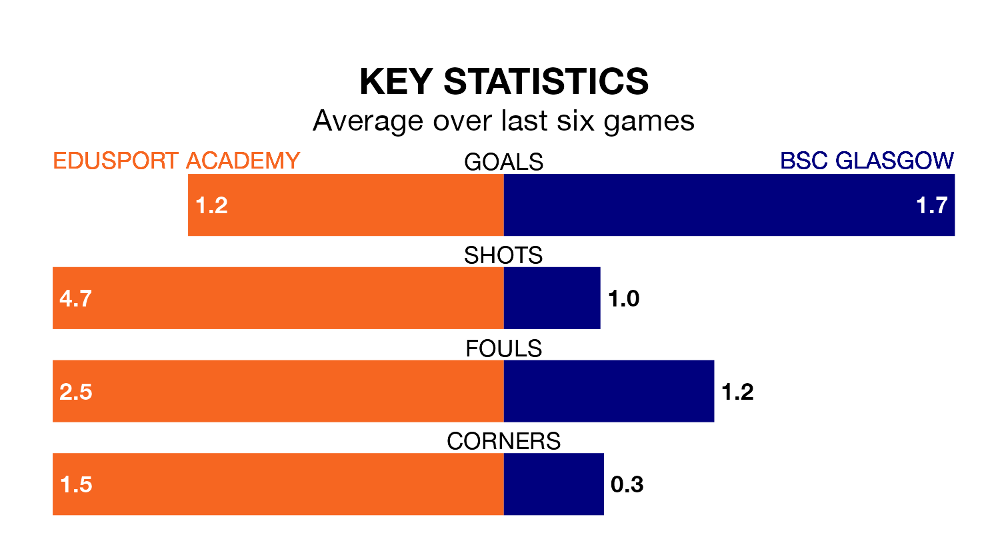

Edusport Academy host BSC Glasgow in Saturday's match at Alliance Park looking to bounce back from defeat last time out in Highland and Lowland Football Leagues.
The Braves, who sit zero in the league after 18 games, fell to a 2-0 away defeat to Cumbernauld Colts on November 25.
They face a BSC Glasgow side who also lost their last match, a 4-0 defeat to Stirling University, and who sit 18th in the table.
Edusport Academy are in disappointing form in Highland and Lowland Football Leagues, with one win and two draws from their last six games.
With three wins and three losses over that period, BSC Glasgow's form is better – they have taken nine points from 18, compared to the Braves's five.
In the last five years, Edusport Academy and BSC Glasgow have played each other on eight occasions. Edusport Academy won two of them and BSC Glasgow six.
On average, the Braves scored 1.5 goals and BSC Glasgow 2.8 in those matches.
Their last meeting was on July 29, when BSC Glasgow won 2-0 at home.
With 21 goals in 18 games so far this season, the home side are the league's joint--2th-lowest scorers with 1.2 goals per game. But they are conceding fewer than average too, letting in 25 goals at a rate of 1.4 per game.
The visitors are also below average scorers, with 1.6 goals per game, compared to a league average of 1.7. They have conceded 1.5 goals per game.
